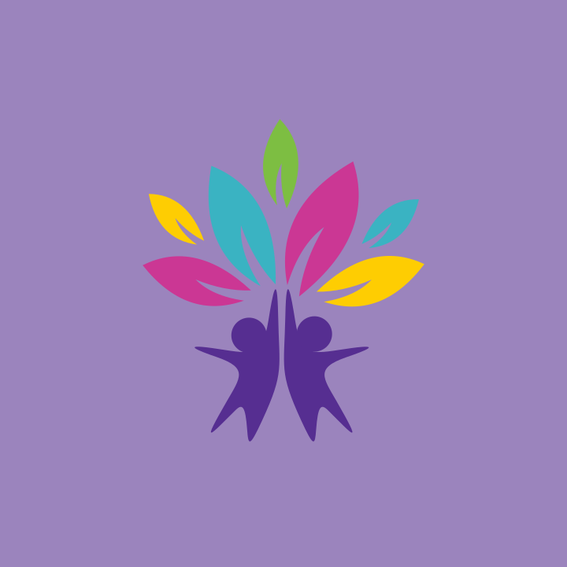
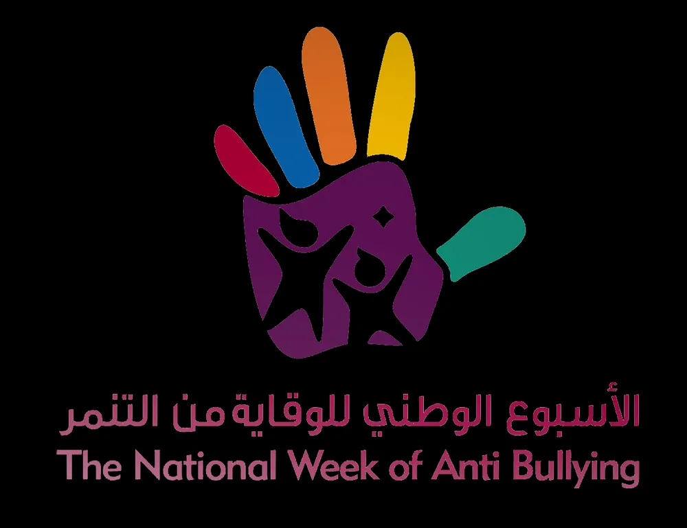
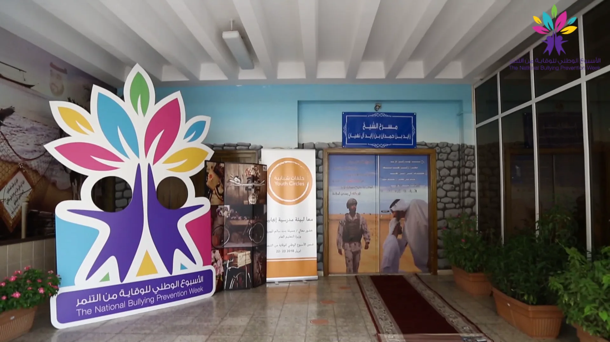
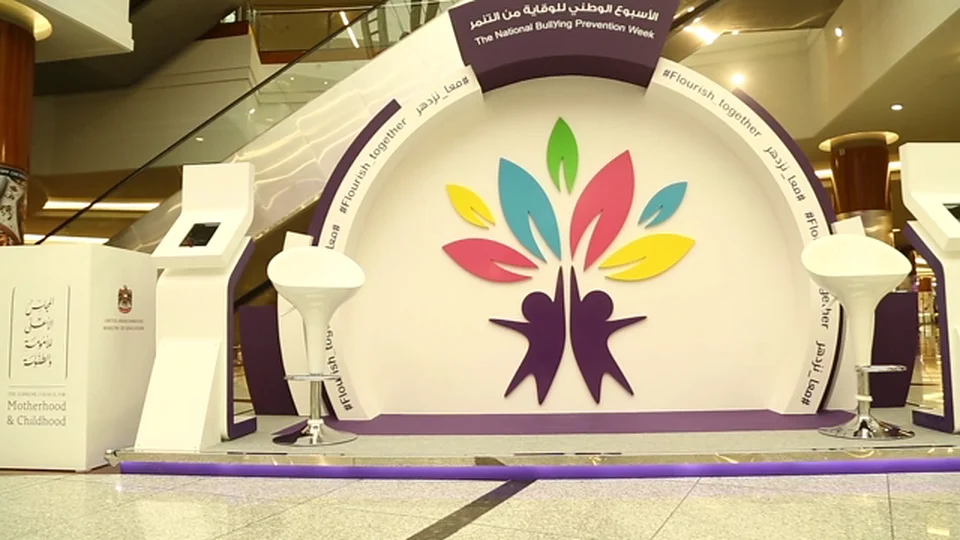
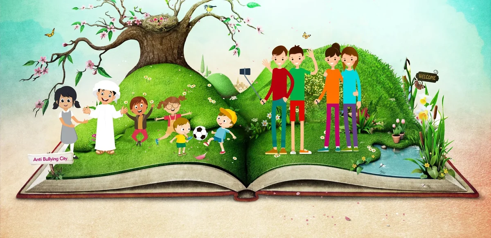

National Bullying Prevention Week
UAE Ministry of Education · April 2018 · the campaign film by AntBrush
The closing walk · La Mer, Dubai · 28 April 2018 · our film
National Bullying Prevention Week
UAE Ministry of Education · La Mer, Dubai · April 2018
National Bullying Prevention Week
The campaign, and the walk.
National Bullying Prevention Week
The UAE’s first National Bullying Prevention Week. I led the team through the identity and campaign, giving activities across 10 cities one shared message: Flourish together.
Antoni Gerges, Creative Director, Brand & Experiential · AntBrush
One week, 10 cities, one mark. It taught seven things a school can do.
Read more
The UAE’s first National Bullying Prevention Week ran from 22 to 28 April 2018, for the Ministry of Education with the Supreme Council for Motherhood and Childhood, under the patronage of H.H. Sheikha Fatima bint Mubarak.
The work was confirmed on Wednesday 18 April. The week opened on Sunday 22 April. I led the identity and the campaign, through AntBrush.
It was the first: the Ministry launched its second national week in November 2018 (Al Bayan, 17 November 2018).
We made the first week; the later weeks were not our work.
Two students come together with a high five, and seven leaves flourish from their hands. The line is #Flourish_together.
The brochure taught seven things a school can do, from tolerance in the curriculum to partnerships with the community, and what bullying is: verbal, social, physical and cyber.

The mark, the line, the key visual and the keyhole artwork; a brochure in Arabic and English; 45 social posts; four phone frames, live from 9 am to 9 pm, Monday to Saturday; the campaign film and a film of every day; posters, T-shirts, pins, wristbands and scarves; fourteen boards and three stands; a Youth Circle set; the signs and flags for the closing walk; a gift box, and an award designed in clear acrylic.
Schools in Ajman and Dubai, Dalma Mall in Abu Dhabi, RAK Mall in Ras Al Khaimah, and La Mer in Dubai for the closing walk on Saturday 28 April.
Posters and the stand reached 10 cities across the UAE: one national week.
Flourish
together.
Two students meet with a high five, and seven leaves flourish from their hands.
Two students, seven leaves
Together is the two students. Flourish is the leaves. Five colours, one mark.
A mark you can stand inside
A child steps behind the board and becomes the figure.
Everywhere a student looks
A brochure for every school, four phone frames, the film on screens, the keyhole on cash machines, a gift and an award.
What the week taught
Seven things a school can do. What bullying is. The line on the back. The brochure’s English pages.
The stand
The mark as a room you sit inside. Drawn for two malls.


A hill that grows out of a book. A city seen through a keyhole.
Drawn in April, built in two malls.
Then we walked.
The result.
Backed by five ministers and more than 20 public bodies.
04 · As reported in the pressSource: Al Ain News, 24 April 2018, citing Trend UAE.
The line stayed. The second national week followed in November 2018; the third, in November 2019, ran as “Together we flourish with tolerance”. Sources: Al Bayan, 17 November 2018 · WAM, 18 November 2019
Explore the campaign
One week, day by day.
- Sun 22Ajman
The week opens in a school: workshops and drawing.
- Mon 23Dubai
Youth Circles: students talk it through, at a boys’ secondary school.
- Tue 24Abu Dhabi
The stand opens at Dalma Mall.
- Wed 25Ras Al Khaimah, Dubai
The stand at RAK Mall, a walk with 500 balloons, two school visits.
- Thu 26Abu Dhabi
A walk at Dalma Mall, and two more schools.
- Fri 27Dubai
Through the night, La Mer is set: 30 flags, six signs, three water stations.
- Sat 28Dubai
The closing walk at La Mer.
Everything that was made.
Source: our final report to the Ministry, 16 July 2018.
What we delivered.
Campaign
- Logo, theme and poster
- Designs for T-shirts, pins, stickers, gifts, ATM screens and desktops
- Invitations, and five more e-invitations
- Social posts, 45; Snapchat geo-filters daily, 9 am to 9 pm
- Copy, translation and a basic identity guideline
Print & giveaways
- Brochures, 10,000, and posters, 1,000, sent to six emirates
- T-shirts, 1,000; pins, 3,000; wristbands, 5,000
- VIP scarves and pens, 200 each; balloons, 900
Space
- Three booths; two placed, at Dalma Mall and RAK Mall
- 3D cut-outs, 14, and pop-ups, ten
- Youth Circle workshop in Ajman: 40 chairs, sound and screen, four microphones
Event
- La Mer finale walkathon: event management
- 30 flags, six signs, three water stations, 1,000 bottles of water
- VIP transport, catering, 100 badges
Film & coverage
- Campaign film
- Photo and video coverage, seven days
- Two video and two photo crews at the finale

The key visual
From the Ministry’s purchase order and the final report, every line marked done.
Creative Director, Brand & Experiential